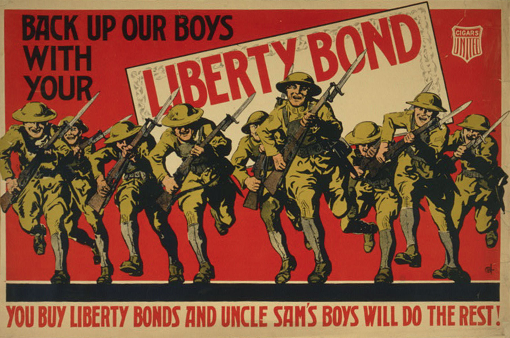
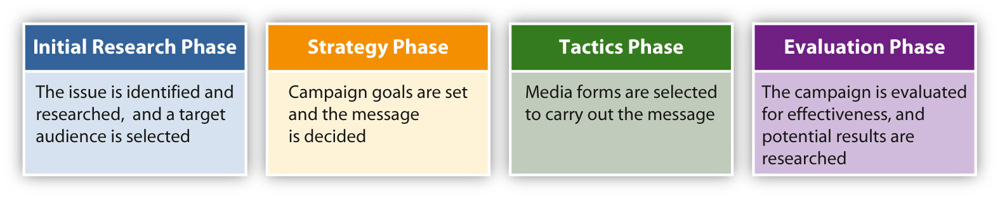
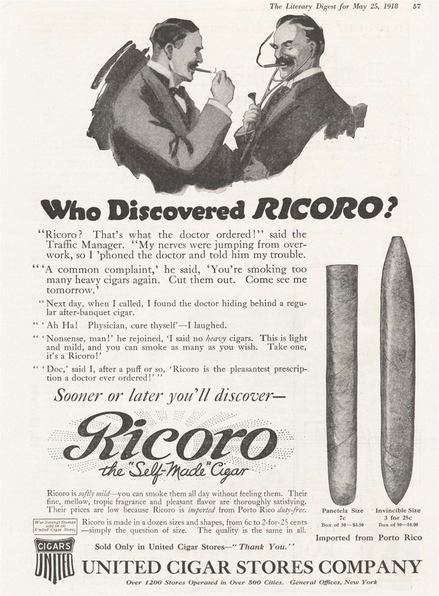
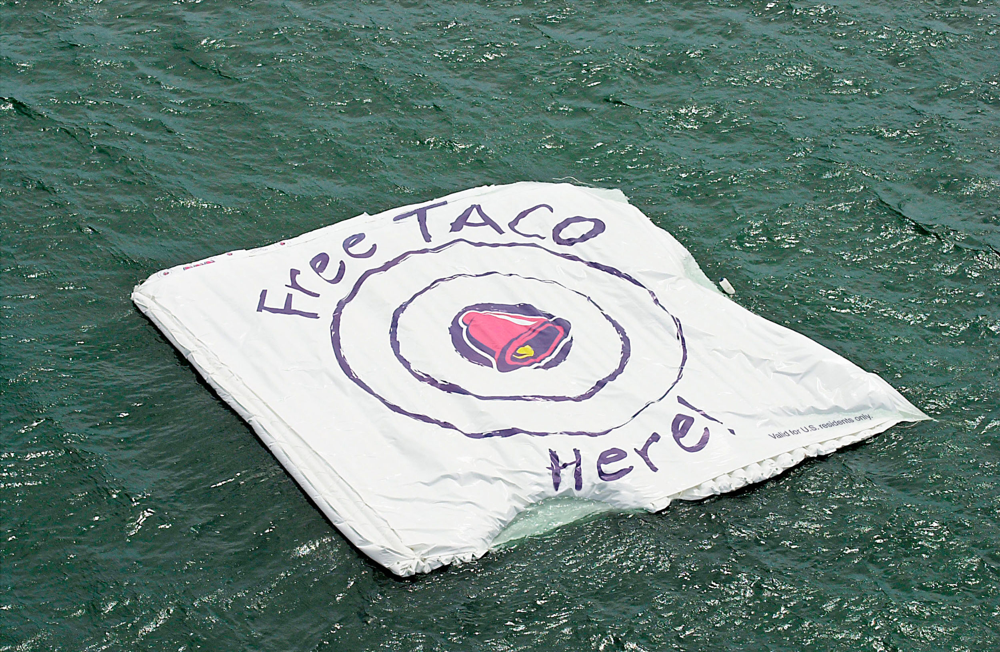
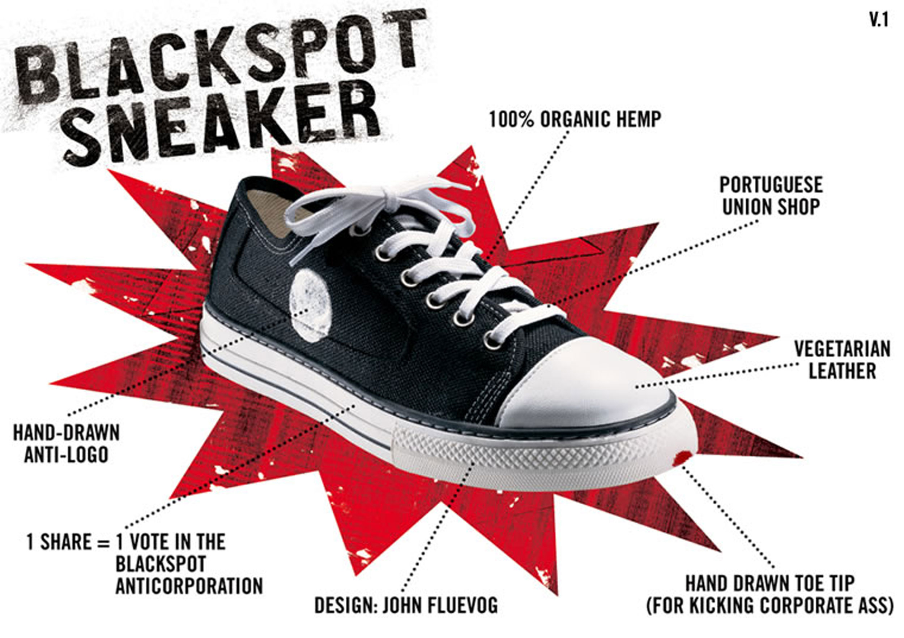
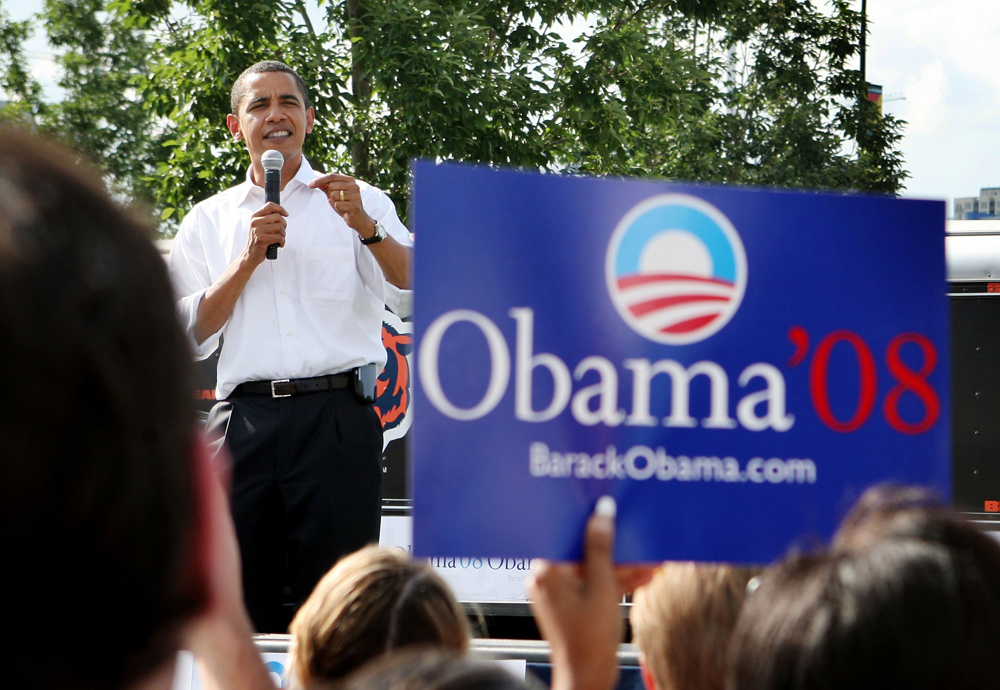

Whereas advertising is the paid use of media space to sell something, public relationsThe actions used by an organization to communicate with its constituents. (PR) is the attempt to establish and maintain good relations between an organization and its constituents.Alison Theaker, The Public Relations Handbook (Oxfordshire, England: Routledge, 2004), 4. Practically, PR campaigns strive to use the free press to encourage favorable coverage. In their book The Fall of Advertising and the Rise of PR, Al and Laura Ries make the point that the public trusts the press far more than they trust advertisements. Because of this, PR efforts that get products and brands into the press are far more valuable than a simple advertisement. Their book details the ways in which modern companies use public relations to far greater benefit than they use advertising.Al Ries and Laura Ries, The Fall of Advertising and the Rise of PR (New York: HarperBusiness, 2004), 90. Regardless of the fate of advertising, PR has clearly come to have an increasing role in marketing and ad campaigns.
Table 12.1 Grunig and Hunt’s Four PR Models
Type of Model |
Description |
Example |
|---|---|---|
Traditional publicity model (the press agentry model) |
Professional agents seek media coverage for a client, product, or event. |
Thong-clad actor Sacha Baron Cohen promotes Bruno by landing in Eminem’s lap at the 2009 MTV Video Music Awards. |
Public information model |
Businesses communicate information to gain desired results. |
Colleges send informational brochures to potential students; a company includes an “about” section on its website. |
Persuasive communication model (the two-way asymmetric model) |
Organizations attempt to persuade an audience to take a certain point of view. |
Public service announcements like the one that shows “your brain” and “your brain on drugs.” |
Two-way symmetric model |
Both parties make use of a back-and-forth discussion. |
A company sends out customer satisfaction surveys; company Facebook groups and message boards. |
Source: James E. Grunig and Todd Hunt, Managing Public Relations (Belmont, CA: Wadsworth Publishing, 1984).
Todd Hunt and James Grunig developed a theory of four models of PR. This model has held up in the years since its development and is a good introduction to PR concepts.James E. Grunig and Todd Hunt, Managing Public Relations, 1984 (Belmont, CA: Wadsworth Publishing).
Under the traditional publicity modelA PR model that aims to gain media attention., PR professionals seek to create media coverage for a client, product, or event. These efforts can range from wild publicity stunts to simple news conferences to celebrity interviews in fashion magazines. P. T. Barnum was an early American practitioner of this kind of PR. His outrageous attempts at publicity worked because he was not worried about receiving negative press; instead, he believed that any coverage was a valuable asset. More recent examples of this style of extreme publicity include controversy-courting musicians such as Lady Gaga and Marilyn Manson. More restrained examples of this type of PR include the modern phenomenon of faded celebrities appearing on television shows, such as Paula Abdul’s long-running appearances on American Idol.
The goal of the public information modelA PR model that attempts to pass information on to the public. is to release information to a constituency. This model is less concerned with obtaining dramatic, extensive media coverage than with disseminating information in a way that ensures adequate reception. For example, utility companies often include fliers about energy efficiency with customers’ bills, and government agencies such as the IRS issue press releases to explain changes to existing codes. In addition, public interest groups release the results of research studies for use by policy makers and the public.
The persuasive communication modelA PR model that uses persuasive techniques to elicit a particular response from the target group., or the two-way asymmetric, works to persuade a specific audience to adopt a certain behavior or point of view. To be considered effective, this model requires a measured response from its intended audience.
Figure 12.12
Edward Bernays created campaigns using the persuasive communication model.
Government propagandaThe organized spreading of information to assist or weaken a cause. is a good example of this model. Propaganda is the organized spreading of information to assist or weaken a cause.Dictionary.com, s.v. “Propaganda,” http://dictionary.reference.com/browse/propaganda. Edward Bernays has been called the founder of modern PR for his work during World War I promoting the sale of war bonds. One of the first professional PR experts, Bernays made the two-way asymmetric model his early hallmark. In a famous campaign for Lucky Strike cigarettes, he convinced a group of well-known celebrities to walk in the New York Easter parade smoking Lucky Strikes. Most modern corporations employ the persuasive communication model.
The two-way symmetric modelA PR model that seeks to achieve consensus between two groups. requires true communication between the parties involved. By facilitating a back-and-forth discussion that results in mutual understanding and an agreement that respects the wishes of both parties, this PR model is often practiced in town hall meetings and other public forums in which the public has a real effect on the results. In an ideal republic, Congressional representatives strictly employ this model. Many nonprofit groups that are run by boards and have public service mandates use this model to ensure continued public support.
Commercial ventures also rely on this model. PR can generate media attention or attract costumers, and it can also ease communication between a company and its investors, partners, and employees. The two-way symmetric model is useful in communicating within an organization because it helps employees feel they are an important part of the company. Investor relations are also often carried out under this model.
Either private PR companies or in-house communications staffers carry out PR functions. A PR group generally handles all aspects of an organization’s or individual’s media presence, including company publications and press releases. Such a group can range from just one person to dozens of employees depending on the size and scope of the organization.
PR functions include the following:
Figure 12.13
Anatomy of a PR campaign
PR campaigns occur for any number of reasons. They can be a quick response to a crisis or emerging issue, or they can stem from a long-term strategy tied in with other marketing efforts. Regardless of its purpose, a typical campaign often involves four phases.
The first step of many PR campaigns is the initial research phase. First, practitoners identify and qualify the issue to be addressed. Then, they research the organization itself to clarify issues of public perception, positioning, and internal dynamics. Strategists can also research the potential audience of the campaign. This audience may include media outlets, constituents, consumers, and competitors. Finally, the context of the campaign is often researched, including the possible consequences of the campaign and the potential effects on the organization. After considering all of these factors, practitioners are better educated to select the best type of campaign.
During the strategy phase, PR professionals usually determine objectives focused on the desired goal of the campaign and formulate strategies to meet those objectives. Broad strategies such as deciding on the overall message of a campaign and the best way to communicate the message can be finalized at this time.
During the tactics phase, the PR group decides on the means to implement the strategies they formulated during the strategy phase. This process can involve devising specific communication techniques and selecting the forms of media that suit the message best. This phase may also address budgetary restrictions and possibilities.
After the overall campaign has been determined, PR practitoners enter the evaluation phase. The group can review their campaign plan and evaluate its potential effectiveness. They may also conduct research on the potential results to better understand the cost and benefits of the campaign. Specific criteria for evaluating the campaign when it is completed are also established at this time.Ronald Smith, Strategic Planning for Public Relations (Mahwah, NJ: Erlbaum Associates, 2002), 9–11.
Since its modern inception in the early 20th century, PR has turned out countless campaigns—some highly successful, others dismal failures. Some of these campaigns have become particularly significant for their lasting influence or creative execution. This section describes a few notable PR campaigns over the years.
During the 1930s, the De Beers company had an enormous amount of diamonds and a relatively small market of luxury buyers. They launched a PR campaign to change the image of diamonds from a luxury good into an accessible and essential aspect of American life. The campaign began by giving diamonds to famous movie stars, using their built-in publicity networks to promote De Beers. The company created stories about celebrity proposals and gifts between lovers that stressed the size of the diamonds given. These stories were then given out to selected fashion magazines. The result of this campaign was the popularization of diamonds as one of the necessary aspects of a marriage proposal.Stuart Reid, “The Diamond Myth,” Atlantic, http://www.theatlantic.com/magazine/archive/2006/12/the-diamond-myth/5491/.
Figure 12.14
In response to the increasing number of health concerns surrounding smoking, tobacco companies began running ads that argued the benefits of smoking their brand.
In 1953, studies showing the detrimental health effects of smoking caused a drop in cigarette sales. An alliance of tobacco manufacturers hired the PR group Hill & Knowlton to develop a campaign to deal with this problem. The first step of the campaign Hill & Knowlton devised was the creation of the Tobacco Industry Research Committee (TIRC) to promote studies that questioned the health effects of tobacco use. The TIRC ran advertisements featuring the results of these studies, giving journalists who were addressing the subject an easy source to quote. The groups working against smoking were not familiar with media relations, making it harder for journalists to quote them and use their arguments.
The campaign was effective, however, not because it denied the harmful effects of smoking but because it stressed the disagreements between researchers. By providing the press with information favorable to the tobacco manufacturers and publicly promoting new filtered cigarettes, the campaign aimed to replace the idea that smoking was undeniably bad with the idea that there was disagreement over the effects of smoking. This strategy served tobacco companies well up through the 1980s.
When the Russian space station Mir was set to crash land in the Pacific Ocean in 2001, Taco Bell created a floating vinyl target that the company placed in the Pacific. Taco Bell promised to give every American a free taco if the space station hit the target. This simple PR stunt gave all the journalists covering the Mir crash landing a few lines to add to their stories. Scientists even speculated on the chances of the station hitting the target—slim to none. Ultimately, the stunt gained Taco Bell global advertising.BBC World, “Taco Bell Cashes in on Mir,” March 20, 2001, http://news.bbc.co.uk/2/hi/americas/1231447.stm.
Figure 12.15
Taco Bell floated a target in the Pacific Ocean as part of a PR campaign.
In some cases, PR has begun overtaking advertising as the preferred way of promoting a particular company or product. For example, the tobacco industry offers a good case study of the migration from advertising to PR. Regulations prohibiting radio and television cigarette advertisements had an enormous effect on sales. In response, the tobacco industry began using PR techniques to increase brand presence.
Tobacco company Philip Morris started underwriting cultural institutions and causes as diverse as the Joffrey Ballet, the Smithsonian, environmental awareness, and health concerns. Marlboro sponsored events that brought a great deal of media attention to the brand. For example, during the 1980s, the Marlboro Country Music Tour took famous country stars to major coliseums throughout the country and featured talent contests that brought local bands up on stage, increasing the audience even further. Favorable reviews of the shows generated positive press for Marlboro. Later interviews with country artists and books on country music history have also mentioned this tour.
On the fifth anniversary of the Vietnam Veterans Memorial in 1987, Marlboro’s PR groups organized a celebration hosted by comedian Bob Hope. Country music legends the Judds and Alabama headlined the show, and Marlboro paid for new names inscribed on the memorial. By attaching the Marlboro brand to such an important cultural event, the company gained an enormous amount of publicity. Just as importantly, these efforts at least partially restored the stature that the brand lost due to health concerns.Leonard Saffir, Power Public Relations: How to Master the New PR (Lincolnwood, IL: NTC Contemporary, 2000), 77–88.
While advertising is an essential aspect of initial brand creation, PR campaigns are vital to developing the more abstract aspects of a brand. These campaigns work to position a brand in the public arena in order to give it a sense of cultural importance.
Pioneered by such companies as Procter & Gamble during the 1930s, the older, advertising-centric model of branding focused on the product, using advertisements to associate a particular branded good with quality or some other positive cultural value. Yet, as consumers became exposed to ever-increasing numbers of advertisements, traditional advertising’s effectiveness dwindled. The ubiquity of modern advertising means the public is sceptical of—or even ignores—claims advertisers make about their products. This credibility gap can be overcome, however, when PR professionals using good promotional strategies step in.
The new PR-oriented model of branding focuses on the overall image of the company rather than on the specific merits of the product. This branding model seeks to associate a company with specific personal and cultural values that hold meaning for consumers. In the early 1990s, for example, car company Saturn marketed its automobiles not as a means of transportation but as a form of culture. PR campaigns promoted the image of the Saturn family, associating the company with powerful American values and giving Saturn owners a sense of community. Events such as the 1994 Saturn homecoming sought to encourage this sense of belonging. Some 45,000 people turned out for this event; families gave up their beach holidays simply to come to a Saturn manufacturing plant in Tennessee to socialize with other Saturn owners and tour the facility.
Recently Toyota faced a marketing crisis when it instituted a massive recall based on safety issues. To counter the bad press, the company launched a series of commercials featuring top Toyota executives, urging the public to keep their faith in the brand.Sharon Bernstein, “Toyota faces a massive marketing challenge,” Los Angeles Times, February 9, 2010, http://articles.latimes.com/2010/feb/09/business/la-fi-toyota-marketing10-2010feb10. Much like the Volkswagen ads half a century before, Toyota used a style of self-awareness to market its automobiles. The positive PR campaign presented Toyotas as cars with a high standard of excellence, backed by a company striving to meet customers’ needs.
Apple has also employed this type of branding with great effectiveness. By focusing on a consistent design style in which every product reinforces the Apple experience, the computer company has managed to position itself as a mark of individuality. Despite the cynical outlook of many Americans regarding commercial claims, the notion that Apple is a symbol of individualism has been adopted with very little irony. Douglas Atkin, who has written about brands as a form of cult, readily admits and embraces his own brand loyalty to Apple:
I’m a self-confessed Apple loyalist. I go to a cafe around the corner to do some thinking and writing, away from the hurly-burly of the office, and everyone in that cafe has a Mac. We never mention the fact that we all have Macs. The other people in the cafe are writers and professors and in the media, and the feeling of cohesion and community in that cafe becomes very apparent if someone comes in with a PC. There’s almost an observable shiver of consternation in the cafe, and it must be discernable to the person with the PC, because they never come back.
Brand managers that once focused on the product now find themselves in the role of community leaders, responsible for the well-being of a cultural image.Douglas Atkin, interview, Frontline, PBS, February 2, 2004, http://www.pbs.org/wgbh/pages/frontline/shows/persuaders/interviews/atkin.html.
Kevin Roberts, the current CEO of Saatchi & Saatchi Worldwide, a branding-focused creative organization, has used the term “lovemark” as an alternative to trademark. This term encompasses brands that have created “loyalty beyond reason,” meaning that consumers feel loyal to a brand in much the same way they would toward friends or family members. Creating a sense of mystery around a brand generates an aura that bypasses the usual cynical take on commercial icons. A great deal of Apple’s success comes from the company’s mystique. Apple has successfully developed PR campaigns surrounding product releases that leak selected rumors to various press outlets but maintain secrecy over essential details, encouraging speculation by bloggers and mainstream journalists on the next product. All this combines to create a sense of mystery and an emotional anticipation for the product’s release.
Emotional connections are crucial to building a brand or lovemark. An early example of this kind of branding was Nike’s product endorsement deal with Michael Jordan during the 1990s. Jordan’s amazing, seemingly magical performances on the basketball court created his immense popularity, which was then further built up by a host of press outlets and fans who developed an emotional attachment to Jordan. As this connection spread throughout the country, Nike associated itself with Jordan and also with the emotional reaction he inspired in people. Essentially, the company inherited a PR machine that had been built around Jordan and that continued to function until his retirement.Kevin Roberts, interview, Frontline, PBS, December 15, 2003, http://www.pbs.org/wgbh/pages/frontline/shows/persuaders/interviews/roberts.html.
An important part of maintaining a consistent brand is preserving the emotional attachment consumers have to that brand. Just as PR campaigns build brands, PR crises can damage them. For example, the massive Gulf of Mexico oil spill in 2010 became a PR nightmare for BP, an oil company that had been using PR to rebrand itself as an environmentally friendly energy company.
In 2000, BP began a campaign presenting itself as “Beyond Petroleum,” rather than British Petroleum, the company’s original name. By acquiring a major solar company, BP became the world leader in solar production and in 2005 announced it would invest $8 billion in alternative energy over the following 10 years. BP’s marketing firm developed a PR campaign that, at least on the surface, emulated the forward-looking two-way symmetric PR model. The campaign conducted interviews with consumers, giving them an opportunity to air their grievances and publicize energy policy issues. BP’s website featured a carbon footprint calculator consumers could use to calculate the size of their environmental impact.Gregory Solman, “BP: Coloring Public Opinion?” Adweek, January 14, 2008, 1http://www.adweek.com/aw/content_display/news/strategy/e3i9ec32f006d17a91cd72d6192b9f7599a. The single explosion on BP’s deep-water oil rig in the Gulf of Mexico essentially nullified the PR work of the previous 10 years, immediately putting BP at the bottom of the list of environmentally concerned companies.
A company’s control over what its brand symbolizes can also lead to branding issues. The Body Shop, a cosmetics company that gained popularity during the 1980s and early 1990s, used PR to build its image as a company that created natural products and took a stand on issues of corporate ethics. The company teamed up with Greenpeace and other environmental groups to promote green issues and increase its natural image.
By the mid-1990s, however, revelations about the unethical treatment of franchise owners called this image into serious question. The Body Shop had spent a great deal of time and money creating its progressive, spontaneous image. Stories of travels to exotic locations to research and develop cosmetics were completely fabricated, as was the company’s reputation for charitable contributions. Even the origins of the company had been made up as a PR tool: the idea, name, and even product list had been ripped off from a small California chain called the Body Shop that was later given a settlement to keep quiet. The PR campaign of the Body Shop made it one of the great success stories of the early 1990s, but the unfounded nature of its PR claims undermined its image dramatically. Competitor L’Oréal eventually bought the Body Shop for a fraction of its previous value.Jon Entine, “Queen of Green Roddick’s ‘Unfair Trade’ Started When She Copied Body Shop Formula,” Daily Mail (London), September 15, 2007, http://www.dailymail.co.uk/femail/article-482012/Queen-Green-Roddicks-unfair-trade-started-copied-Body-Shop-formula.html.
Other branding backlashes have plagued companies such as Nike and Starbucks. By building their brands into global symbols, both companies also came to represent unfettered capitalist greed to those who opposed them. During the 1999 World Trade Organization protests in Seattle, activists targeted Starbucks and Nike stores for physical attacks such as window smashing. Labor activists have also condemned Nike over the company’s use of sweatshops to manufacture shoes. Eventually, Nike created a vice president for corporate responsibility to deal with sweatshop issues.Naomi Klein, No Logo (New York: Picador, 2002), 366.
Adbusters, a publication devoted to reducing advertising’s influence on global culture, added action to its criticisms of Nike by creating its own shoe. Manufactured in union shops, Blackspot shoes contain recycled tire rubber and hemp fabric. The Blackspot logo is a simple round dot that looks like it has been scribbled with white paint, as if a typical logo had been covered over. The shoes also include a symbolic red dot on the toe with which to kick Nike. Blackspot shoes use the Nike brand to create their own anti-brand, symbolizing progressive labor reform and environmentally sustainable business practices.“Nat Ives, “Anti-Ad Group Tries Advertising,” New York Times, September 21, 2004, http://www.nytimes.com/2004/09/21/business/media/21adco.html.
Figure 12.16
Blackspot shoes developed as an anti-brand alternative to regular sneakers.
Politics and PR have gone hand in hand since the dawn of political activity. Politicians communicate with their constituents and make their message known using PR strategies. Benjamin Franklin’s trip as ambassador to France during the American Revolution stands as an early example of political PR that followed the publicity model. At the time of his trip, Franklin was an international celebrity, and the fashionable society of Paris celebrated his arrival; his choice of a symbolic American-style fur cap immediately inspired a new style of women’s wigs. Franklin also took a printing press with him to produce leaflets and publicity notices that circulated through Paris’s intellectual and fashionable circles. Such PR efforts eventually led to a treaty with France that helped the colonists win their freedom from Great Britain.Walter Isaacson, Benjamin Franklin: An American Life (New York: Simon & Schuster, 2003), 325–349.
Famous 20th-century PR campaigns include President Franklin D. Roosevelt’s Fireside Chats, a series of radio addresses that explained aspects of the New Deal. Roosevelt’s personal tone and his familiarity with the medium of radio helped the Fireside Chats become an important promotional tool for his administration and its programs. These chats aimed to justify many New Deal policies, and they helped the president bypass the press and speak directly to the people. More recently, Blackwater Worldwide, a private military company, dealt with criticisms of its actions in Iraq by changing its name. The new name, Xe Services, was the result of a large-scale PR campaign to distance the company from associations with civilian violence.Associated Press, “Blackwater Ditches Tarnished Brand Name,” USA Today, February 13, 2009, http://www.usatoday.com/news/military/2009-02-13-blackwater_N.htm.
The proliferation of media outlets and the 24-hour news cycle have led to changes in the way politicians handle PR. The gap between old PR methods and new ones became evident in 2006, when then–Vice President Dick Cheney accidentally shot a friend during a hunting trip. Cheney, who had been criticized in the past for being secretive, did not make a statement about the accident for three days. Republican consultant Rich Galen explained Cheney’s silence as an older PR tactic that tries to keep the discussion out of the media. However, the old trick is less effective in the modern digital world.
That entire doctrine has come and gone. Now the doctrine is you respond instantaneously, and where possible with a strong counterattack. A lot of that is because of the Internet, a lot of that is because of cable television news.Associated Press, “Cheney Hunting Accident Seen as P.R. Disaster,” MSNBC, February 16, 2006, http://www.msnbc.msn.com/id/11396608/ns/politics/.
PR techniques have been used in propaganda efforts throughout the 20th century. During the 1990s, the country of Kuwait employed Hill & Knowlton to encourage U.S. involvement in the Persian Gulf region. One of the more infamous examples of their campaign was a heavily reported account by a Kuwaiti girl testifying that Iraqi troops had dumped babies out of incubators in Kuwaiti hospitals. Outrage over this testimony helped galvanize opinion in favor of U.S. involvement. As it turned out, the Kuwaiti girl was really the daughter of the Kuwaiti ambassador and had not actually witnessed any of the alleged atrocities.Patricia Parsons, Ethics in Public Relations (Sterling, VA: Chartered Institute of Public Relations, 2005), 7.
Lobbyists also attempt to influence public policy using PR campaigns. The Water Environment Federation, a lobbying group representing the sewage industry, initiated a campaign to promote the application of sewage on farms during the early 1990s. The campaign came up with the word biosolids to replace the term sludge. Then it worked to encourage the use of this term as a way to popularize sewage as a fertilizer, providing information to public officials and representatives. In 1992, the U.S. Environmental Protection Agency adopted the new term and changed the classification of biosolids to a fertilizer from a hazardous waste. This renaming helped New York City eliminate tons of sewage by shipping it to states that allowed biosolids.John Stauber and Sheldon Rampton, Toxic Sludge is Good for You! (Monroe, ME: Common Courage Press, 1995), 105–119.
Politics has also embraced branding. Former President Bill Clinton described his political battles in terms of a brand war:
[The Republicans] were brilliant at branding. They said they were about values…. Everybody is a values voter, but they got the brand … they said they were against the death tax … what a great brand…. I did a disservice to the American people not by putting forth a bad plan, but by not being a better brander, not being able to explain it better.David Kiley, “How Will Bill Clinton Manage His Brand?” BusinessWeek, June 10, 2008, analysishttp://www.businessweek.com/bwdaily/dnflash/content/jun2008/db2008069_046398.htm.
Branding has been used to great effect in recent elections. A consistently popular political brand is that of the outsider, or reform-minded politician. Despite his many years of service in the U.S. Senate, John McCain famously adopted this brand during the 2008 presidential election. McCain’s competitor, Barack Obama, also employed branding strategies. The Obama campaign featured several iconic portraits and slogans that made for a consistent brand and encouraged his victory in 2008. Before Obama’s inauguration in January 2009, an unprecedented amount of merchandise was sold, a further testament to the power of branding.Sheldon Alberts, “Brand Obama,” Financial Post, January 17, 2009, http://www.financialpost.com/m/story.html?id=1191405.
Figure 12.17
The 2008 Obama campaign used logos as a way to publicize Obama’s brand.
That so many different groups have adopted branding as a means of communication is a testament to its ubiquity. Even anti-commercial, anti-brand groups such as Adbusters have created brands to send messages. Social media sites have also encouraged branding techniques by allowing users to create profiles of themselves that they use to communicate their core values. This personal application is perhaps the greatest evidence of the impact of advertising and PR on modern culture. Branding, once a technique used by companies to sell their products, has become an everyday means of communication.
Please answer the following short-answer questions. Each response should be a minimum of one paragraph.
Review Questions
Questions for Section 12.1 "Advertising"
Questions for Section 12.2 "Public Relations"
Advertising has had an enormous influence on the ways that people present and imagine themselves. Personal branding has become an industry, with consultants and coaches ready to help anyone find his or her own brand. Creating a personal brand is a useful way to assess your skills and feelings about the advertising or PR professions.
Research the term personal brand using a search engine. Look for strategies that would help you construct your own brand. Imagine that you are a brand and describe what that brand offers. This does not need to be limited to professional capacities, but should represent your personal philosophy and life experiences. In 15 words or less, write a description of your brand.
Answer the following questions about your brand description: